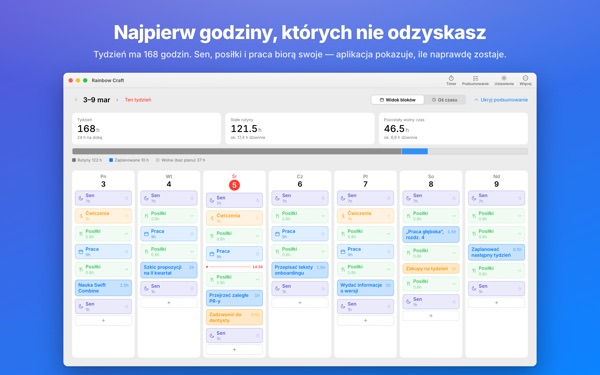
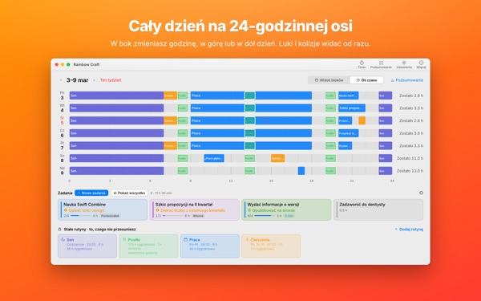
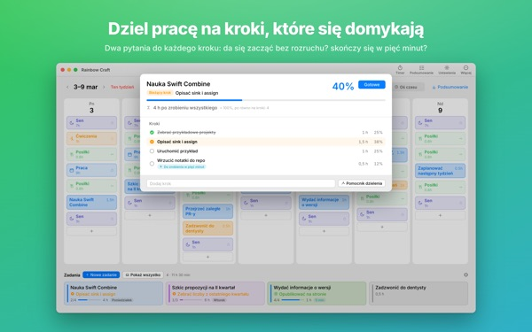
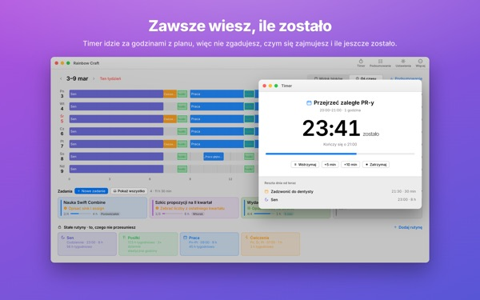
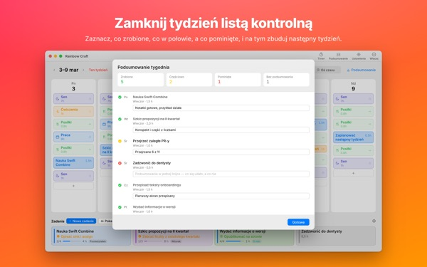

Czy to wszystko naprawdę
zmieści się w tym tygodniu?
Rainbow Craft rozkłada twój tydzień na Macu według dni i godzin. Zacznij od czasu, z którego nie zrezygnujesz, jak sen, posiłki i praca, przeciągnij zadania w wolne miejsca i zobacz, co faktycznie się mieści.
Planowanie, rutyny, zadania, podsumowanie, timer i import kalendarza są darmowe.

Zaplanuj tydzień tutaj
Wstawiliśmy cztery rutyny, które aplikacja proponuje przy pierwszym uruchomieniu. Włączaj je i wyłączaj, a potem kładź zadania na dni.
Lista rośnie. Tydzień nie.
Lista zadań nie powie ci, czy twój tydzień ją pomieści. Gdy sen, jedzenie i dojazdy zabiorą swoje, zostaje mniej, niż myślisz. Rainbow Craft pokazuje te godziny w liczbach i polach i pozwala przymierzyć każde zadanie do prawdziwego miejsca.
Dzień na 24-godzinnej linijce
Oś czasu rozkłada dzień na linijce 24 godzin. Luki i nakładki widać od razu, a ty wybierasz, jak ułożyć nachodzące na siebie sprawy.
Spotkania i wizyty pobierzesz z Kalendarza na Macu zamiast wpisywać je dwa razy. Jeśli chcesz, plany trafią też do osobnego kalendarza Rainbow Craft, widocznego na iPhonie. Twoje pozostałe kalendarze nigdy nie są zmieniane.

Dziel duże sprawy na kroki, które się kończą
Duże sprawy stają, gdy coś wciąż blokuje drogę. Aplikacja zadaje o każdy krok dwa pytania: czy zaczniesz bez rozgrzewki? Czy skończysz w pięć minut?
To, co spełnia oba warunki, jest okruchem na każde wolne pięć minut. Reszta wymaga zarezerwowanego czasu. Jeśli aplikacja się myli, decydujesz ty.

Czym się zajmujesz i ile jeszcze zostało
O godzinie startu plan przechodzi w trwający, a gdy czas minie, aplikacja pyta, czy skończyłeś. Timer idzie za twoim planem.
Widżet Timer Teraz pokazuje bieżące zadanie i pozostały czas bez otwierania aplikacji.

Zamknij tydzień listą kontrolną
Podsumowanie tygodnia to jedna karta na dzień. Zaznacz, co zrobione, zrobione w połowie, a co pominięte, i wykorzystaj to przy planowaniu kolejnego tygodnia.
Na tym samym koncie iCloud zadania krążą między tą aplikacją a Rainbow of Desire na iPhonie, więc dzień zaplanowany na Macu masz zawsze przy sobie.

Start w trzech krokach
- 1
Ustal stałe godziny
To, co wraca co tydzień, jak sen, posiłki i praca, zapisz jako rutyny. Aplikacja nic nie wypełnia za ciebie.
- 2
Wypisz zadania
Po jednym w wierszu w sekcji Zadania na dole. Kiedy je zrobisz, nie musisz jeszcze wiedzieć.
- 3
Przeciągnij na dni
Upuszczone na dzień staje się planem. Data się przesunęła? Przeciągnij na inny dzień albo z powrotem na listę.
Rachunek dla proponowanych rutyn
- Tydzień
- 168 godzin
- Sen · 8 godzin dziennie
- 56 godzin
- Posiłki · trzy dziennie
- 17,5 godziny
- Praca · nauka · 9 godzin w dni robocze
- 45 godzin
- Ćwiczenia · 1 godzina pn, śr, pt
- 3 godziny
- Czas, który naprawdę masz w tym tygodniu
- 46,5 godziny
To tylko propozycje. Wybierz i dopasuj rutyny do swojego życia. W dni urlopu lub wyjazdu usuń pracę tylko z tego jednego dnia.
Wszystko, czego potrzebujesz na ten tydzień, jest za darmo
Za darmo
- Plany tygodnia i dnia, rutyny i zadania bez limitu
- Oś czasu i dzielenie na kroki
- Podsumowanie tygodnia, także do skopiowania jako tekst
- Timer i widżet Timer Teraz
- Import kalendarza
- Synchronizacja z Rainbow of Desire na iPhonie
- Trendy z ostatnich 2 tygodni
Plus · Pro
- Plus: trendy z 8 tygodni, twoje najlepsze dni i godziny
- Plus: plan a rzeczywistość
- Plus: przenieś plan udanego tygodnia na ten tydzień za jednym razem
- Pro: wszystko z Plus oraz udostępnianie planu przez link tylko do odczytu
- Pro: jeden zakup odblokowuje Pro także w aplikacji na iPhone’a
Każdy poziom jako subskrypcja roczna lub jednorazowy zakup na zawsze
Ceny znajdziesz w aplikacji i w App Store. Subskrypcja roczna odnawia się automatycznie, jeśli nie anulujesz jej najpóźniej 24 godziny przed końcem okresu. Pro kupione na iPhonie działa też na Macu z tym samym kontem iCloud.
Częste pytania
Czy muszę być zalogowany do iCloud?
Nie, jeśli używasz aplikacji tylko na Macu. iCloud jest potrzebny do synchronizacji z iPhone’em i udostępniania planu.
Czy aplikacja zmienia moje kalendarze?
Nigdy tych, które już masz. Import tylko odczytuje wybrane kalendarze. Jeśli włączysz zapisywanie planów do kalendarza Rainbow Craft, aplikacja utworzy ten osobny kalendarz i będzie pisać tylko tam. Możesz go w każdej chwili usunąć w aplikacji Kalendarz.
Zadania z Maca nie pojawiają się na iPhonie.
Sprawdź, czy oba urządzenia używają tego samego konta iCloud i czy na iPhonie jest zainstalowana Rainbow of Desire. Synchronizacja idzie przez iCloud i może potrwać kilka minut.
Czy zamknięcie okna zamyka aplikację?
Nie. Aplikacja działa dalej. Okno otworzysz ponownie z menu Okno albo klikając ikonę w Docku.
Co się dzieje z moimi zadaniami i planami po aktualizacji?
Zostają dokładnie takie, jakie były. Aktualizacje niczego, co napisałeś, nie zmieniają ani nie usuwają.
Jak zmienić język aplikacji?
Wybierz go na samej górze Ustawień w Language · 언어 · 語言, a aplikacja uruchomi się ponownie w tym języku. Dostępne są 23 języki. Nazwy rutyn i zadania wpisane przez ciebie nie są tłumaczone.
Nowy Mac i zniknęło Plus albo Pro.
Zaloguj się tym samym Kontem Apple i kliknij Odtwórz zakup w Ustawieniach. Anulować możesz w ustawieniach konta w App Store.
Gdzie trafia to, co piszę?
Bez konta, bez rejestracji i bez serwera dewelopera z twoimi planami. To, co piszesz, zostaje na twoich urządzeniach i w twoim iCloud. Aplikacja wysyła anonimowe statystyki użycia bez twoich treści, a wyłączysz je w Ustawieniach opcją Wysyłaj anonimowe statystyki użycia.
Utknąłeś albo coś wygląda dziwnie? Napisz na mizzking75@gmail.com. W ustawieniach aplikacji też znajdziesz kontakt.